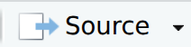
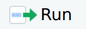

{kind=link}
print("Hello! First contact with R successful!")[1] "Hello! First contact with R successful!"By the end of this part of the practical you should be able to:
At the beginning of each practical, make sure to sync any changes in the main copy of online repository from GitHub.
File > Open ProjectMB1A_Students_2026_2027 folder and then to the directory for Practical_1_Introduction_to_R, then load Practical_1_Introduction_to_R.Rproj.Sync Fork. If it shows “This branch is not behind the upstream” there is nothing else you need to do.Update Branch. Do not click Discard commits.Git tab.Pull to update your local copy of the repository.
In this session, we will learn the basics of using the programming language R, which we will use for data analysis and visualisation throughout the MB1A course.
The R language was initially developed by two programmers, Ross Ihaka and Robert Gentleman, in 1993, for teaching introductory statistics. It has become one of the most commonly used languages in scientific computing, particularly amongst biologists.
R provides many of the same functions as spreadsheet tools such as MS Excel and Google Sheets, and statistics and graphing software like SPSS and GraphPad.
However, R has lots of advantages over these tools:
Before we go any further, let’s try writing some R code.
When you first open your RStudio project, your screen will look like this.
We will look at other parts of the screen shortly, but for now let’s focus on the Console.
In the console, R commands can be typed and executed immediately by the computer. When you type a line of code and press EnterEnter, it is transferred to the R interpreter. Results are shown straight after the command is executed. However, no record is kept and any information is lost once the session is closed.
Try typing the following, in the grey box, into the console, then press EnterEnter.
print("Hello! First contact with R successful!")[1] "Hello! First contact with R successful!"You should immediately see the message on the screen.
Now, try the following. Here, you are creating a new variable, x, with a value of 8. In R, the operator <- associates a specific name (here the name is x) with a specific value (we will discuss this in more detail later).
x <- 3 + 5To see the value of x, type print (x) into the console, then press EnterEnter.
print(x)[1] 8Usually in these practicals, we won’t run most of our code directly in the console like this as it doesn’t save what we’ve done. Coding in the console is a bit like cooking without a recipe - the results can be great, but if you want to make the same thing again, you may not remember exactly what you did.
However, it can be useful to use the console, for example to quickly try something out or check the value of a variable.
If R is ready to accept commands, the R console shows a > symbol.
If the console shows a + symbol, this means it is waiting for something - you have most likely not ‘closed’ a parenthesis or quotation, i.e. you don’t have the same number of left-parentheses as right-parentheses, or the same number of opening and closing quotation marks. When this happens, and you thought you finished typing your command, click inside the console window and press EscapeEscape. This will cancel the incomplete command and return you to the > prompt.
Now we will learn a bit about the rest of RStudio.
RStudio is an interactive development environment (IDE) - a piece of software designed to make working with R as easy as possible. It’s free, open-source and well-supported.
In the image above you can see that the window is divided into three main parts, each with various tabs. In clockwise order we have:
In orange we’ve highlighted the tabs we’ll be using most.
Click on the environment now - you should see two variables: x, with a value of 8 and my_name, with whatever you entered as your name above.
The Git tab allows you to interact with Git and GitHub, as we saw above.
Help is where you can go for help.
The basis of programming is that we create or code instructions for the computer to follow.
Next, we tell the computer to follow the instructions by executing or running those instructions.
In your RStudio window, choose File > New File > R Script. This will add a new panel to your RStudio session, the Source panel.
Here, we can save our code as a script. This is a list of commands which the R interpreter will execute in order. The script represents a complete record of what we did, and anyone (including our future selves!) can easily replicate the results on their computer. We can also use a script to repeatedly perform the same or similar tasks.
| Console | Script |
|---|---|
| runs code directly | in essence, a text file |
| interactive | needs to be told to run |
| no record | records actions |
| difficult to trace progress | transparent workflow |
To create a script, we put a list of commands for R to run into the Source panel.
Try entering the following into the Source panel, then press the

button. The button runs all of the code in theSource panel, while the 
button will only run the active line - the line where your cursor is currently. The answer should show in the console.x <- 8
y <- 10
z <- x + y
print(z)[1] 18For this part of the practical, the main files you have created are:
my_first_script.RThese are the files you should select when making your Git commit.
Remember to save your progress regularly by committing your changes with Git.
Save button.Render button.Git tab in RStudio.Commit and write a short message in the Commit message describing your changes, something like e.g. “Practical 1 part 1” is sufficient, then click Commit. Close the Commit popup.{kind=link}
{kind=link}